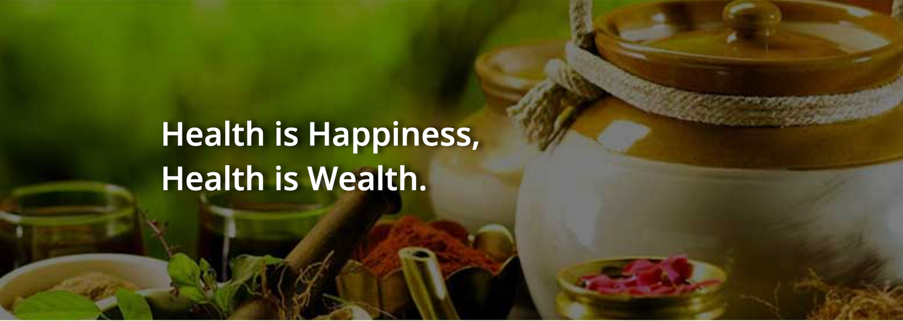

What are your fees?
Fees for one hour consultation: 120 Euros
Fees for 1/2 hour consultation: 65 Euros
Please note that all first consultations are for one hour except for young children.

Vaidya (Ayurvedic doctor from India) Alaknanda Rao (B.A.M.S., D.Ayu.D.) has 32 years of clinical experience and offers Ayurveda consultations in English for men, women and children of all age groups for:
About Us
Dr. (India) Alaknanda Rao (Bachelor of Ayurveda, Medicine, and Surgery) studied at Pune University full time for 5 1/2 years and passed with distinction in two subjects. Together with university education, she worked with many renowned Vaidyas and gained practical experience. After one year internship in urban and rural hospitals she got licence to practice Ayurveda.
In 1992 a small city based clinic was started in Pune. It was named after Panini, the ancient scholar of Ayurveda, Yoga and Sanskrit language. After working successfully for more than 10 years she did her post graduation in Ayurvedic Dietetics from Tilak Maharashtra University in Pune, India.
Alaknanda Rao started working in Europe in 2002. Panini Ayurveda is now mainly based in Amstelveen, The Netherlands.
The clinic in India is still active with the name Ayushmat Ayurveda clinic in Pune. From there we offer personalised Panchakarma treatments and internship programs for Ayurveda students.
Learn More ->Answers to common questions about Panini Ayurveda.
Fees for one hour consultation: 120 Euros
Fees for 1/2 hour consultation: 65 Euros
Please note that all first consultations are for one hour except for young children.
We are open from Monday to Friday.
By appointments only.
Ayurveda comes under alternative medicine and one needs extra insurance coverage for it.
Check your insurance coverage ->Free parking is available right in front of the clinic door. Some free parking is also available in the neighbourhood.
Yes. Dr. Rao sees young children from neonates up to teenagers and has long experience treating pregnant women, postnatal women and children of all age groups.
So far insurance companies do not cover costs for supplements. Like other food supplements and vitamins, Ayurvedic supplements are paid out of pocket.